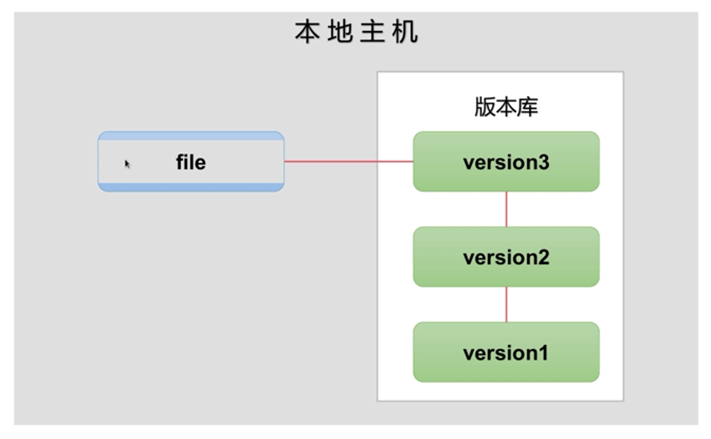
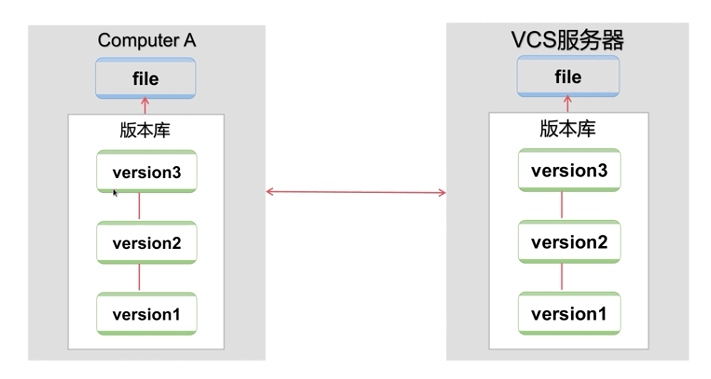

Git
git概述
git是一个版本控制系统
关于版本控制
- 版本控制是一种记录若干文件内容变化，以便将来查阅特定版本修订情况的系统
- 有了它你就可以将某个文件回溯到之前的状态，甚至将整个项目都会退到过去某个时间点
- 可以比较文件的变化细节，查出是谁最后修改了什么地方从而造成某些怪异问题，又是谁在何时报告了某个功能缺陷
本地版本控制系统
- 人们很久以前就开发了很多种本地版本控制系统
- 大多都是采用某种简单的数据库来记录文件的历次更新差异
- 其中最流行的一种叫做rcs
- 它的工作原理就是保存并管理文件补丁（patch）

集中化的版本控制系统
- 集中化的版本控制系统允许不同的开发者可以协同工作
- 此类系统有CVS，Subversion以及Perforce等
- 它们都单一拥有集中管理的服务器，保存所有文件的修订版本
- 协同工作的人们都通过客户端连到这台服务器，去除最新的文件或者提交更新
分布式版本控制系统
- 客户端并不只提取最新版的文件快照
- 而是把原始的代码仓库完整的镜像下来
- 任何一处协同工作的服务器发生故障，事后都可以用任何一个镜像出来的本地仓库恢复
- 每一次的提取操作，实际上都是一次对代码仓库的完整备份

Git的历史
- Linux内核开源项目有着位数众多的参与者
- 1991-2002年间，绝大多数的Linux内核维护工作都花在了提交补丁和保存归档的繁琐事务上
- 2002年，整个项目组开始启用分布式版本控制系统BitKeeper来管理和维护代码
- 到2005年的时候，开发BitKeeper的商业公司同Linux内核开源社区的合作关系结束，他们收回了免费使用的BitKeeper的权利
Git的特点
- 直接快照，而非比较差异
- 近乎所有操作都可本地执行
- 时刻保持数据完整性。在保存Git之前，所有数据都要进行内容的
校验和（checksum）计算，并将此结果作为数据的唯一标识和索引
Git状态
任何一个文件，在Git内都只有这三个状态
- 已提交（committed）：表示该文件已经被安全地保存在本地数据库中了
- 已修改（modified）：表示修改了某个文件，但还没有保存提交
- 已暂存（staged）：表示把已修改的文件放在下次提交时要保存到清单中
- 工作区：git文件夹
- 版本库：git文件夹/.git
- 暂存区：git文件夹/.git/index
Git工作流程
Git基础配置
安装Git
- Git安装后需要配置用户相关信息
1 | [root@aliyun ~]$ yum install git -y |
Git基础应用
仓库管理
创建仓库（版本库）
- 尚不存在项目时，可以直接创建
1 | [root@aliyun ~]$ git init devops |
- 在已有项目的目录中创建仓库
1 | [root@aliyun ~]$ cd myweb/ |
仓库说明
- 初始化后，在当前目录下会出现一个名为
.git的目录 - 所有Git需要的数据和资源都存放在这个目录中
- 目录仅仅按照既有的结构框架，初始化好了仓库中所有的文件和目录
- 还没有开始跟踪管理项目中的任何一个文件
从现有仓库克隆
- 还可以通过克隆现有仓库的方式获取版本库
- 直接克隆
1 | [root@aliyun ~]$ git clone https://github.com/schacon/grit |
- 克隆时，指定本地目录
1 | [root@aliyun ~]$ git clone https://github.com/schacon/grit mygrit |
记录更新到仓库
文件状态
- 工作目录下的所有文件都不外乎这两种状态：以跟踪和未跟踪
- 以跟踪的文件被纳入版本控制管理的文件，在上次快照中有它们的记录，工作一段时间后，它们的状态可能时未更新，已修改或者已放入暂存区
- 所有其他文件都属于未跟踪文件
检查状态
- 干净的工作区：当前没有任何跟踪着的文件，也没有任何文件在上次提交后更改过
- 信息还表明，当前目录下没有任何处于未跟踪的新文件
- 该命令还显示了当前所在的分支是
master，这是默认的分支名称
1 | [root@aliyun grit]$ git status |
跟踪文件
- 使用命令
git add开始跟踪一个新文件 - 运行
git status命令，会看到文件已被跟踪，并处于暂存状态
1 | [root@aliyun myweb]$ ls |
跟踪所有文件
- 如果文件较少，可以指定跟踪的文件
- 当文件很多时，可以使用
git add .
1 | [root@aliyun myweb]$ echo "git test" > README |
忽略文件
- 可以创建一个名为
.gitignore的文件 .gitignore的格式规范如下- 所有空行或者以注释符号
#开头的行都会被Git忽略 - 可以使用标准的
glob模式匹配 - 匹配模式最后跟反斜杠
/说明要忽略的是目录 - 要忽略指定模式以外的文件或目录，可以在模式前加上惊叹号
!取反
1 | [root@aliyun myweb]$ vim function.txt |
提交更新
- 直接提交会启动文本编辑器以便输入本次提交的说明
1 | [root@aliyun myweb]$ git commit |
- 也可以使用
-m参数提交说明的方式，在一行命令中提交更新
1 | [root@aliyun myweb]$ git commit -m "add README" |
移除文件
- 要从Git中移除某个文件，就必须要从以跟踪文件清单中移除（确切地说，是从暂存区域移除），然后提交
- 使用
git rm命令完成此项工作，并连带从工作目录中删除
1 | [root@aliyun myweb]$ git rm index.html |
移动文件
- Git并不跟踪文件移动操作
- 要在Git中对文件改名，可以这么做
1 | [root@aliyun myweb]$ git mv README README.md |
- 运行
git mv就相当于运行了下面三个命令
1 | [root@aliyun myweb]$ mv README README.md |
查看提交历史
- 在提交了若干更新之后，又或者克隆了某个项目，想回顾下提交历史，可以使用
git log命令
1 | [root@aliyun myweb]$ git commit -m "rm index.html,mv README README.md" |
- 每次更新都会有一个SHA-1校验和、作者名字和电子邮件地址、提交时间，最后缩进一个段落显示提交说明
取消已暂存文件
- 文件修改后，错误的提交到暂存区
- 希望将文件撤出暂存区，但是保留其修改的内容
1 | [root@aliyun myweb]$ vim README.md |
取消对文件的修改
- 文件修改后，后悔所做出的修改
- 希望文件恢复为修改前的内容
1 | [root@aliyun myweb]$ git status |
Git版本控制
新建数据
- 在客户端对仓库进行编辑，创建新资料
- web2为客户端
1 | [root@web2 project]# echo "init date" > init.txt |
提交数据到本地仓库
1 | #提交暂存区 |
将数据推送至远程服务器
1 | [root@web2 project]# git config --global push.default simple |
生成更多版本
- 多次修改，生成更多版本
1 | [root@web2 project]# echo "new file" > new.txt |
查看日志
1 | [root@web2 project]# git log |
数据恢复
HEAD指针
HEAD指针是一个可以在任何分支和任何版本移动的指针
通过移动指针我们可以将数据还原至任何版本
当前HEAD指针为HEAD@{0}
通过git relog查看当前指针
1 | [root@web2 project]# git reflog |
移动HEAD指针
- 通过移动指针就可以获取任何版本的数据
1 | [root@web2 project]# git reset --hard db8b564 |
Git分支管理
标签管理
标签概述
- 同大多数VCS一样，Git也可以对某一时间点上的版本打上标签
- Git可以给历史中的某一个提交打上标签，以示重要
- 在发布某个软件版本（比如V1.0等等）的时候，经常这么做
- 发布一个版本时，通常先在版本库中打一个标题（tag），这样就确定了打标签时刻的版本。将来无论什么时候，取某个标记的版本，就是把那个打标签的时刻的历史版本取出来
列出标签
- 在Git中列出已有标签是非常简单直观的
1 | [root@aliyun myweb]$ git tag |
- 这个命令以字母顺序列出标签；但是它们出现的顺序并不重要
查找标签
- 可以使用特定的模式查找标签
- 例如，Git自身的源代码仓库包含标签的数量超过500个。如果只对1.8.5感兴趣，可以运行：
1 | [root@aliyun myweb]$ git tag -l 'v1.8.5*' |
标签分类
- Git使用两种主要类型的标签
- 轻量标签（lightweight）：它只是一个特定提交的应用
- 附注标签（annotated）：是存储在Git数据库中的一个完整对象。其中包含打标签作者的名字、电子邮件地址、日期时间；还有一个标签信息、并且可以使用GNU Privacy Guard（GPG）签名和验证
附注标签
- 简单的方式是当你在运行tag命令时指定
-a选项
1 | [root@aliyun myweb]$ git tag -a v1.4 -m "my version 1.4" |
轻量标签
- 创建轻量标签，不需要使用选项，只需要提供标签名字
1 | [root@aliyun myweb]$ git tag v1.4-lw |
删除标签
- 删除本地仓库的标签，使用命令
git tag -d <tagname>
1 | [root@aliyun myweb]$ git tag -d v1.4-lw |
Git分支
分支概述
几乎所有的版本控制系统都以某种形式支持分支
使用分支意味着你可以把你的工作从开发主线上分离开来，以免影响开发主线
在很多版本控制系统中，这是一个略微低效的过程
Git处理分支的方式可谓是难以置信的轻量，创建新分支这一操作几乎能瞬间完成
在不同分支之间的切换操作也是一样便捷
分支可以让开发分多条主线同时进行，每条主线互不影响
按功能模块分支、按版本分支
分支也可合并
常见的分支规范
MASTER是主分支，是代码的核心
DEVELOP最新开发成果的分支
RELEASE分支，为发布新产品设置的分支
HOTFIX分支，为修复软件BUG缺陷的分支
FEATURE分支，为开发新功能设置的分支
核心原理
- 当使用
git commit进行提交操作时，Git先计算每一个子目录的校验和 - 然后在Git仓库中这些校验和保存为树对象
- 随后，Git便会创建一个提交对象，它除了包含上面提到的哪些信息外，还包含指向这个树对象（项目根目录）的指针
- 如此一来，Git就可以在需要的时候重现此次保存的快照
1 | [root@aliyun myweb]$ git add README test.rb LICENSE |
- 做些修改后再次提交，那么这次产生的提交对象会包含一个指向上次提交对象（父对象）的指针
- Git的分支，其实本质上仅仅是指向提交对象的可变指针
- Git的默认分支名字是master
- 在多次提交操作之后，你其实已经有一个指向最后那个提交对象的master分支
- 它会在每次的操作中自动详情移动
- master并不是一个特殊分支，与其他分支没有区别
1 | [root@aliyun myweb]$ git branch # 查看当前分支 |
- Git有一个名为HEAD的特殊分支，指向当前所在分支
创建分支
- 创建分支只是为你创建了一个可以移动的新的指针
1 | [root@aliyun myweb]$ git branch testing |
切换分支
- 创建分支并不会切换分支
- 要切换一个已存在的分支，你需要使用
git checkout
1 | [root@aliyun myweb]$ git checkout testing |
合并分支
- 每个分支都可以继续进行提交
- 分支功能完成后，可以汇入主干分支
1 | [root@aliyun myweb]$ git branch |
- 合并分支
1 | [root@aliyun myweb]$ git branch |
- 分支版本冲突问题
- 在不同分支中修改相同的文件相同行数据，模拟数据冲突
1 | [root@web2 project]# git checkout hotfix |
删除分支
- 删除分支
git branch -d name
1 | [root@aliyun myweb]$ git branch |
本博客所有文章除特别声明外，均采用 CC BY-NC-SA 4.0 许可协议。转载请注明来自 ૮(˶ᵔ ᵕ ᵔ˶)ა！